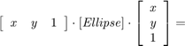
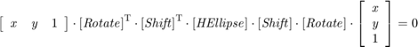
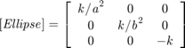
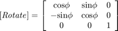
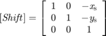

Contents
Get the horizontal ellipse from an ellipse in arbitrary direction
- Author: WANG Lei,USTB
- Date:2016/3/3
- Algorithom:
Get [ HEllipse ] [ Rotate ] and [ Shift ] From [ Ellipse ]:


Where:



- Inputs:
Ellipse----3 by 3 real symmetric matrix;
- Outputs:
HEllipse----3 by 3 diagonal matrix;
[k/(a^2),0,0;
0,k/(b^2),0;
0,0,k];
Rotate----3 by 3 rotation matrix;
[cos(phi),sin(phi),0;
-sin(phi),cos(phi),0;
0,0,1];
Shift----3 by 3 shift matrix;
[0,0,-xs;
0,0,-xs;
0,0,1];
a,b,c,e,phi----double value of ellipse para;
Center----2 by 1 array,Center point of the source ellipse;
Focus----2 by 1 array,Focus point of the source ellipse;
Peaks1----2 by 1 array,Peak points in long axis of the source ellipse;
Peaks2----2 by 1 array,Peak points in short axis of the source ellipse;function [HEllipse,Rotate,Shift,a,b,c,e,phi,Center,Focus,Peaks1,Peaks2] = GetHorizontalEllipse(Ellipse)
% Initial [hE, wE]=size(Ellipse); if ~(hE==3 && wE==3) error('Input matrix size error!'); end if ~det(Ellipse)>0 || Ellipse~=Ellipse error('Input matrix is not real symmetric matrix!'); end % Algorithm % Find a rotate matrix [Rotate]: % [cos(phi) sin(phi) 0 % [Rotate] = -sin(phi) cos(phi) 0 % 0 0 1] % Fit the equation: % [x]'*[Ellipse]*[x]=[x]'*[Rotate]'*[D]*[Rotate]*[x]=0 % Thus: [Ellipse]=[Rotate]'*[D]*[Rotate] % [D]=[Rotate]*[Ellipse]*[Rotate]' % Find a rotate matrix [Rotate] to make[D]: % [D](1,2) and [D](2,1)=0 % By solving orthogonal eigenvectors of[Ellipse](1:2,1:2): % [Ellipse(1:2,1:2)]*[Rotate]' = [Rotate]'*[D] [V,D] = eig(Ellipse(1:2,1:2)); Rotate=orth(V)'; if Rotate(1,2)*Rotate(2,1)>0 || Rotate(1,1)*Rotate(2,2)<0 Rotate=Rotate(:,2:-1:1); D=[D(2,2) 0;0 D(1,1)]; end Rotate=[Rotate [0;0];0 0 1]; % Fix rotation 90 R90=[1 0 0;... 0 1 0 ;... 0 0 1]; if(a<b) R90=[cos(pi/2) sin(pi/2) 0;... -sin(pi/2) cos(pi/2) 0 ;... 0 0 1]; else end Rotate=Rotate*R90; D=Rotate*Ellipse*Rotate'; % Find a shift matrix [Shift] and [HEllipse] % Since: % clc % syms x0 y0 real; % S=[1 0 -x0;0 1 -y0;0 0 1]; % syms d11 d13 d22 d23 d33 real; % D=[d11 0 d13;... % 0 d22 d23;... % d13 d23 d33]; % syms l1 l2 l3 real; % HEllipse=[l1 0 0;... % 0 l2 0;... % 0 0 l3]; % D=S'*L*S= % [ l1, 0, -l1*x0] % [ 0, l2, -l2*y0] % [ -l1*x0, -l2*y0, l1*x0^2 + l2*y0^2 + l3] % Thus: % HEllipse(1,1)=D(1,1) % HEllipse(2,2)=D(2,2) % HEllipse(3,3)=D(3,3)-D(1,3)*D(1,3)/D(1,1)-D(2,3)*D(2,3)/D(2,2); HEllipse=D; HEllipse(3,3)=HEllipse(3,3)-HEllipse(1,3)*HEllipse(1,3)/HEllipse(1,1)-... HEllipse(2,3)*HEllipse(2,3)/HEllipse(2,2); HEllipse(1,3)=0; HEllipse(2,3)=0; HEllipse(3,1)=0; HEllipse(3,2)=0; HEllipse=HEllipse./-HEllipse(3,3); a=sqrt(1/HEllipse(1,1)); b=sqrt(1/HEllipse(2,2)); xs=-D(1,3)/D(1,1); ys=-D(2,3)/D(2,2); x0y0=Rotate'*[xs;ys;1]; Center=x0y0(1:2,1); Shift=[1 0 -xs;0 1 -ys;0 0 1]; phi=acossin([Rotate(1,1) Rotate(1,2)]); c=sqrt((a^2-b^2)); e=c/(a); % Get Focus Focus=[c*cos(theta),-c*cos(theta);c*sin(theta),-c*sin(theta)]; Focus(:,1)=Focus(:,1)+Center; Focus(:,2)=Focus(:,2)+Center; % Get Peaks1,Peaks2 Peaks1=[a*cos(theta),-a*cos(theta);a*sin(theta),-a*sin(theta)]; Peaks1(:,1)=Peaks1(:,1)+Center; Peaks1(:,2)=Peaks1(:,2)+Center; Peaks2=[b*cos(theta+pi/2),-b*cos(theta+pi/2);b*sin(theta+pi/2),-b*sin(theta+pi/2)]; Peaks2(:,1)=Peaks2(:,1)+Center; Peaks2(:,2)=Peaks2(:,2)+Center;
Error using GetHorizontalEllipse (line 70) Not enough input arguments.
Get the angle from cos and sin
- Inputs:
R---[cos(theta) sin(theta)]
- Outputs:
phi---Between [-pi pi)
function [phi] = acossin(R) if R(1,1)>0 %cos(theta) if R(1,2)>0 %sin(theta) 1st quad if(R(1,1)>R(1,2)) %<45' phi=asin(R(1,2)); else%>45' phi=acos(R(1,1)); end else %4th quad if(R(1,1)>-R(1,2)) %>-45' phi=asin(R(1,2)); else%<-45' phi=-acos(R(1,1)); end end else if R(1,2)>0 %sin(theta) 2nd quad if(-R(1,1)>R(1,2)) %>135' phi=pi-asin(R(1,2)); else%<135' phi=acos(R(1,1)); end else %3rd quad if(-R(1,1)>-R(1,2)) %<-135' phi=-pi-asin(R(1,2)); else%<135' phi=-acos(R(1,1)); end end end